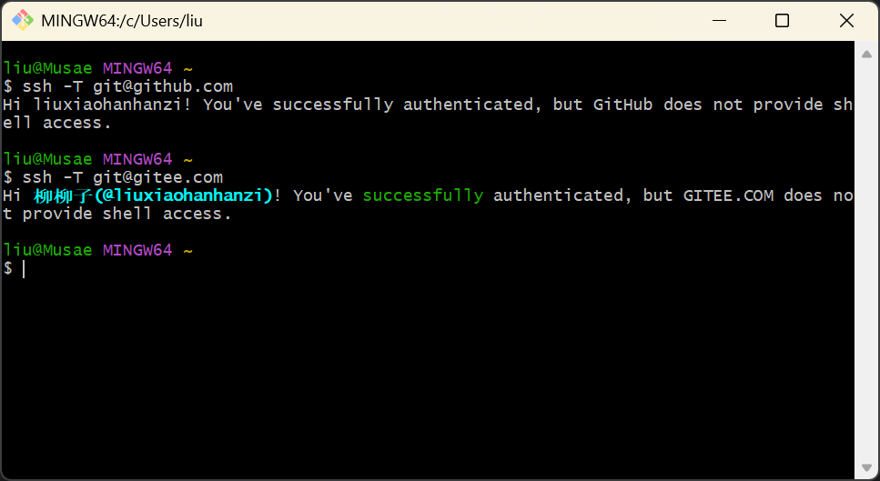
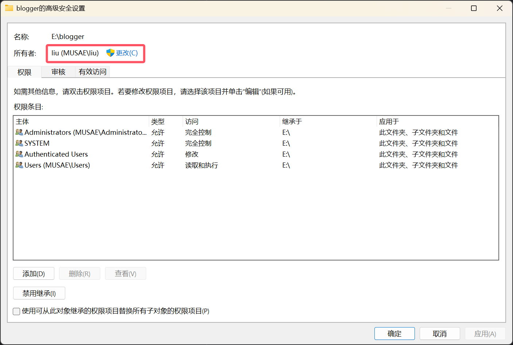

# ssh 密钥
首先安装 git，配置好获得秘钥
将 ssh 密钥绑定到 github 与 gitee 账户上
部分操作可参考教程链接
这里我们在 git bash 输入以下指令验证：
ssh -T git@github.com
ssh -T git@gitee.com
这里出现了问题：
The authenticity of host ‘github.com (20.205.243.166)‘ can‘t be established |
参考 csdn 教程，我们了解到是 IP 信任问题
无脑输入 yes 其实就可以，但是博主还是选择了最保险的方式
在 C:\Users\liu\.ssh 目录下新建 known_hosts 文件，无后缀。用记事本格式编辑，输入 GitHub 的 SSH 密钥指纹：
github.com ssh-ed25519 AAAAC3NzaC1lZDI1NTE5AAAAIOMqqnkVzrm0SdG6UOoqKLsabgH5C9okWi0dh2l9GKJl | |
github.com ecdsa-sha2-nistp256 AAAAE2VjZHNhLXNoYTItbmlzdHAyNTYAAAAIbmlzdHAyNTYAAABBBEmKSENjQEezOmxkZMy7opKgwFB9nkt5YRrYMjNuG5N87uRgg6CLrbo5wAdT/y6v0mKV0U2w0WZ2YB/++Tpockg= | |
github.com ssh-rsa AAAAB3NzaC1yc2EAAAADAQABAAABgQCj7ndNxQowgcQnjshcLrqPEiiphnt+VTTvDP6mHBL9j1aNUkY4Ue1gvwnGLVlOhGeYrnZaMgRK6+PKCUXaDbC7qtbW8gIkhL7aGCsOr/C56SJMy/BCZfxd1nWzAOxSDPgVsmerOBYfNqltV9/hWCqBywINIR+5dIg6JTJ72pcEpEjcYgXkE2YEFXV1JHnsKgbLWNlhScqb2UmyRkQyytRLtL+38TGxkxCflmO+5Z8CSSNY7GidjMIZ7Q4zMjA2n1nGrlTDkzwDCsw+wqFPGQA179cnfGWOWRVruj16z6XyvxvjJwbz0wQZ75XK5tKSb7FNyeIEs4TT4jk+S4dhPeAUC5y+bDYirYgM4GC7uEnztnZyaVWQ7B381AK4Qdrwt51ZqExKbQpTUNn+EjqoTwvqNj4kqx5QUCI0ThS/YkOxJCXmPUWZbhjpCg56i+2aB6CmK2JGhn57K5mj0MNdBXA4/WnwH6XoPWJzK5Nyu2zB3nAZp+S5hpQs+p1vN1/wsjk= |
同样的，再输入 Gitee SSH 密钥指纹：
gitee.com ssh-ed25519 AAAAC3NzaC1lZDI1NTE5AAAAIEKxHSJ7084RmkJ4YdEi5tngynE8aZe2uEoVVsB/OvYN gitee.com ecdsa-sha2-nistp256 AAAAE2VjZHNhLXNoYTItbmlzdHAyNTYAAAAIbmlzdHAyNTYAAABBBMuEoYdx6to5oxR60IWj8uoe1aI0XfKOHWOtLqTg1tsLT1iFwXV5JmFjU46EzeMBV/6EmI1uaRI6HiEPtPtJHE= gitee.com ssh-rsa AAAAB3NzaC1yc2EAAAADAQABAAABAQDMzG3r+88lWSDK9fyjcZmYsWGDBDmGoAasKMAmjoFloGt9HRQX2Qp4f9FY2XK/hsHYinvoh5Xytl9iaUNUWMfYR8q6VEMtOO87DgoAFcfKZHt0/nbAg9RoNTKYt6v8tPwYpr7N0JP/01nE4LFsNDnstr6H0bXSAzbKWCETLZfdPV4l2uSpRn3bU0ugoZ0aSKz5Dc/IloBfGCTvkSsxUydMRd/Chpjt6VxncDbp+Fa6pzsseK8OQzrg6Fgc5783EN3EQqZ2skqyCwExtx95BJlfx1B3luZnWfpkwNDnrZRT/Qx0OrWqyf0q6f9uQr+UG1S8qDcUn3e/9onq3rwBri8/ |
再次验证，成功
# operation not permitted
博主在博客目录下进行操作时
- hexo 报错：ERROR EPERM: operation not permitted
- git 报错：
fatal: detected dubious ownership in repository at 'E:/blogger/shokax-can' | |
'E:/blogger/shokax-can' is owned by: | |
(inconvertible) (S-xxx) | |
but the current user is: | |
MUSAE/liu (S-xxx) | |
To add an exception for this directory, call: | |
git config --global --add safe.directory E:/blogger/shokax-can |
参照教程，更改文件夹所有者为当前用户：

问题解决